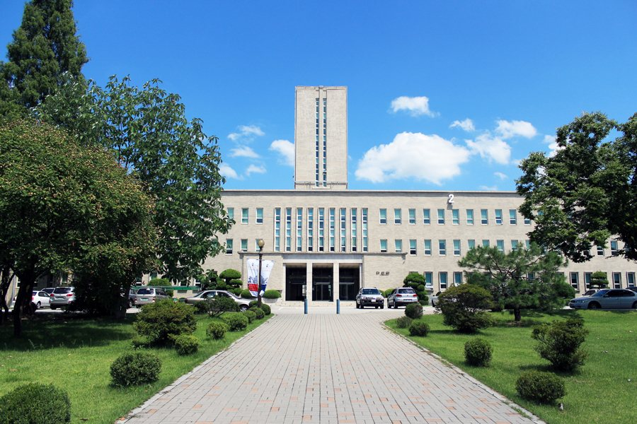

정시 반영비율표에서 가장 먼저 봐야 할 칸은 수학이 아니라 영어 칸입니다. 영어를 감점으로 넣는 대학과 비율로 넣는 대학은 남은 기간의 시간표가 반대로 갈리기 때문입니다. 서울과학기술대학교는 영어를 비율로 넣는 쪽입니다. 이 글은 전형 소개가 아니라, 그 반영비율을 "그래서 어느 과목을 먼저"로 바꿔 읽는 글입니다. 고3 수학과외와 영어 수업 시간을 어떻게 나눌지 정하는 기준이 됩니다.
| 영역 | 반영비율 | 무게 순서 |
|---|---|---|
| 수학 | 35% | 1순위 |
| 탐구 | 25% | 2순위 |
| 영어 | 20% | 3순위 (감점이 아니라 비율) |
| 국어 | 20% | 3순위 |
공과대학·정보통신대학·창의융합대학 등 공학 중심 모집단위 기준입니다. 인문계열 모집단위는 국어 비중이 커지고 수학이 줄어드는 구조인데, 모집단위별 수치는 출처마다 정리가 달라 이 글에서는 적지 않았습니다. 지원 학과의 정확한 비율은 아래 입학처 안내로 확인하세요.
많은 상위권 대학이 영어를 비율에서 빼고 등급별 감점만 적용합니다. 그런 대학에서는 2등급만 지키면 더 올릴 이유가 거의 없습니다. 서울과학기술대학교는 다릅니다. 영어 등급이 20% 몫의 점수로 직접 환산됩니다. 영어 1등급과 2등급, 2등급과 3등급의 차이가 총점에 그대로 남는다는 뜻입니다.
그래서 전략이 뒤집힙니다. 감점형 대학만 보고 "영어는 2등급이면 됐다"고 손을 놓았다면, 이 대학을 지원군에 넣는 순간 영어는 다시 올릴 가치가 있는 과목이 됩니다. 영어는 남은 두 달에도 등급이 움직일 수 있는 영역이라, 수학이 정체된 학생에게는 오히려 실속 있는 카드입니다.
공학계열이니 수학이 가장 큽니다. 다만 다른 공학 중심 대학처럼 수학이 40%를 넘지는 않아서, 수학 하나로 뒤집는 구조는 아닙니다. 수학 35%에 탐구 25%를 더하면 60%. 이 두 과목을 묶어서 관리하는 편이 점수 효율이 좋습니다. 수학의 킬러 문항 한 문제를 붙잡는 시간과 과학탐구 한 단원을 정리하는 시간을 견주면, 후자가 이 비율표에서는 더 크게 돌아옵니다.
공학계열 지원자에게 국어는 네 영역 중 가장 가볍습니다. 그렇다고 버리라는 뜻은 아닙니다. 20%는 영어와 같은 무게이고, 한 영역이 무너지면 다른 영역으로 메우기 어렵습니다. 국어는 지키는 과목으로 두고, 지금 나오는 등급을 유지할 만큼만 주간 분량을 정해 두는 편이 맞습니다.
학생 수준에 맞는 선생님을 24시간 안에 추천해 드려요. 상담은 무료입니다.